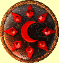
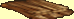
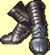

Zbroje
Ko¾ené zbroje (Zpìt na obsah)
| Jméno: | Ko¾ené brnìní | |
| Tøída zbroje: | 4 | |
| Nejlehèí a nejsnadnìji vyrobitelné mezi brnìními, ko¾ené brnìní nabízí nejménì ochrany. Tento konkrétní oblek je prùmìrné kvality. | ||
| Cena: | 150 | |
| Jméno: | Tvrzená kù¾e | |
| Tøída zbroje: | 6 | |
| Tvrzená kù¾e nabízí více ochrany ne¾ obyèejné ko¾ené brnìní za cenu vìt¹í tuhosti a váhy. Tento konkrétní oblek je dobøe udìlán. | ||
| Cena: | 250 | |
| Jméno: | Zaèarovaná kù¾e | |
| Tøída zbroje: | 10 | |
| Jinak obyèejné ko¾ené brnìní je prostoupeno dùmyslným oèarováním, které zesiluje materiál proti ranám, ani¾ by zvy¹ovalo váhu. | ||
| Cena: | 450 | |
| Jméno: | Císaøská kù¾e | |
| Tøída zbroje: | 16 | |
| Standardní druh ko¾eného brnìní pro dùstojníky Regnanského námoønictva. V¹echna taková ko¾ená brnìní obdr¾í oèarování k posílení a zlehèení bìhem výroby v Regnanských zbrojovkách. | ||
| Cena: | 750 | |
| Jméno: | Draèí kù¾e | |
| Tøída zbroje: | 24 | |
| Velice vzácné ko¾ené brnìní vytvoøené bìhem konfliktù mezi Církví Mìsíce a Církví Slunce zhruba pøed 80 lety. Tyto obleky poskytují nejlep¹í ochranu, která je mo¾ná s ko¾eným brnìním. | ||
| Cena: | 1150 | |
Krou¾kové zbroje (Zpìt na obsah)
| Jméno: | Krou¾kové brnìní | |
| Tøída zbroje: | 8 | |
| Krou¾kové brnìní je zbroj slo¾ená z malých, navzájem zapadajících kovových krou¾kù. Tento oblek je nízké kvality: pou¾itý kov je èisté ¾elezo, má pouze dvì vrstvy krou¾kù a je tì¾ké a tuhé na svoji velikost. | ||
| Cena: | 400 | |
| Jméno: | Ocelové brnìní | |
| Tøída zbroje: | 12 | |
| Lep¹í krou¾kové brnìní, pou¾itý kov je ocel a pøedchozí vlastník je peèlivì udr¾oval naolejované a bez rzi. | ||
| Cena: | 600 | |
| Jméno: | Vzne¹ené brnìní | |
| Tøída zbroje: | 18 | |
| Krou¾kové brnìní dùstojníka kavalérie z dob vlády Taledona V. z Karigoru, Bo¾ského Veleknìze a Nejvy¹¹í Jasnosti Církve Slunce, cca 870 P.T. Zbroj je vysoké kvality, oèarovaná k zlehèení a posílení kovu. | ||
| Cena: | 900 | |
| Jméno: | Královské brnìní | |
| Tøída zbroje: | 26 | |
| Vysoce oèarovaná zbroj no¹ená elfskou ¹lechtou a králi bìhem Válek o døevo v sedmém a osmém století. | ||
| Cena: | 1300 | |
| Jméno: | Majestátní brnìní | |
| Tøída zbroje: | 36 | |
| Velice vzácná zbroj vyrobená v Nebeských kovárnách guvernéra Padishe pøed Tichem. Zbroj byla pùvodnì no¹ena pouze Guvernérem a jeho nejvy¹¹ími vojenskými dùstojníky jako odznak úøadu. Není jen na dívání; toto krou¾kové brnìní je lehèí, silnìj¹í a více ohebné ne¾ jakékoli jiné na svìtì. | ||
| Cena: | 1800 | |
Plátové zbroje (Zpìt na obsah)
| Jméno: | Plátová zbroj | |
| Tøída zbroje: | 20 | |
| Slo¾ené z navzájem zapadajících plátù a spojù, plátová zbroj je ta nejlep¹í neoèarovaná zbroj. Je ale nicménì tì¾ká a zpomaluje pohyby nositele. Tento oblek je prùmìrné kvality a kováø je neznámý. | ||
| Cena: | 1000 | |
| Jméno: | Ocelová plátová zbroj | |
| Tøída zbroje: | 28 | |
| Dobøe vytvoøené ocelové pláty dohromady formují celkovì znamenitou zbroj. Znaèka slévárny pod pravou pa¾í znaèí, ¾e byla vyrobena nedávno v Kelebrimu. | ||
| Cena: | 1400 | |
 |
Jméno: | Zlatá plátová zbroj |
| Tøída zbroje: | 54 | |
| Tato plátová zbroj byla ukována v Mekorigovì slévárnì osmnáct let po smrti Mekoriga Slepého. Mistrovské dílo, zbroj se nosí skoro stejnì lehce jako obyèejné ¹aty a je to pravdìpodobnì nejlep¹í brnìní, jaké je na svìtì k dispozici. | ||
| Cena: | 2700 | |
©títy (Zpìt na obsah)
V¹echny ¹títy ve høe se rozdìlují do dvou samostatných kategorií - na velké a malé ¹títy. Ka¾dá z nich je pak opìt øazena podle kvality od nejhor¹ího po nejlep¹í.
Velké ¹títy
| Jméno: | Ko¾ený ¹tít | |
| Tøída zbroje: | 6 | |
| Tvoøený usní nata¾enou na døevìný rám, tento jednoduchý ¹tít poskytuje základní ochranu proti fyzickým útokùm. | ||
| Cena: | 200 | |
| Jméno: | Vì¾ový ¹tít | |
| Tøída zbroje: | 7 | |
| Jednoduchost heraldického vzoru na tomto ¹títu vede k my¹lence, ¾e byl vytvoøen buï barbary nebo gobliny. Je vyroben z odolných materiálù a mìl by v boji odolávat pøijatelnì dobøe. | ||
| Cena: | 300 | |
| Jméno: | Velký ¹tít | |
| Tøída zbroje: | 9 | |
| Tento ¹tít je tvoøen døevem orámovaným ¾elezem. Je ponìkud tì¾ký na svoji velikost, ale bitvu bys s ním mìl pøe¾ít bezpeènì -- pokud ov¹em nebude¹ pøepaden zezadu. | ||
| Cena: | 400 | |
|  | Jméno: | Nebeský ¹tít |
| Tøída zbroje: | 13 | |
| Vyroben z lehkého kovu, podle znaèku slévárny tento ¹tít pochází z Kelebrimovy zbrojovky. Pøesto¾e lehký, jeho materiál je velmi silný a kov je svaøen témìø bezespárovì. | ||
| Cena: | 500 | |
 |
Jméno: | Olympský ¹tít |
| Tøída zbroje: | 19 | |
| Tyto ¹títy byly ukovány v Phynaxianském císaøství bìhem jeho krátkého období moci na stepích ji¾ní Erathie (790-864). Jsou vyrobeny ze staltu, kovu, který lze velice dobøe oèarovat, a pøispìly velkým dílem k Phynaxianské vojenské moci. Nane¹tìstí, tohoto kovu nebylo mnoho, a tak Phynaxia padla 864 P.T. pøi ofenzívì elfù. | ||
| Cena: | 800 | |
Malé ¹títy
| Jméno: | Døevìný ¹tít | |
| Tøída zbroje: | 4 | |
| Malý døevìný ¹tít navrhnutý hlavnì jako ochrana pøed ¹ípy. | ||
| Cena: | 100 | |
| Jméno: | Bronzový ¹tít | |
| Tøída zbroje: | 6 | |
| Bronzové ¹títy jsou lehèí ne¾ ¾elezné ¹títy stejné velikosti, ale nejsou ani zdaleka tak úèinné. | ||
| Cena: | 200 | |
| Jméno: | Ocelový ¹tít | |
| Tøída zbroje: | 8 | |
| Proto¾e tento ¹tít je vyroben z kalené oceli, mìl by odolávat v¹emu a¾ na ty nejneobvyklej¹í èarovné zbranì. | ||
| Cena: | 300 | |
| Jméno: | Du¹evní ¹tít | |
| Tøída zbroje: | 12 | |
| Du¹evní ¹títy jsou obvyklé ocelové ¹títy oèarované rituálním procesem, který mù¾e mít mohutné, tøeba¾e nepøedvídatelné následky. Proces je èasové nároèný a vy¾aduje plnou pozornost alespoò tøí mistrù Du¹evní magie. | ||
| Cena: | 450 | |
 |
Jméno: | Astrální ¹tít |
| Tøída zbroje: | 18 | |
| Tyto vzácné ¹títy byly kdysi vyrábìny po stovkách v Nebeských kovárnách pro boj s rebely. Ti v nekoneèném øetìzci ¹arvátek a loupe¾ných výpadù testovali (a koneènì pøemohli) Panovníkovy síly v prvním století P.T. Jako ka¾dé takové vybavení je lehké, tvrdé a schopné nést nejmocnìj¹í kouzla. | ||
| Cena: | 750 | |
Helmy (Zpìt na obsah)
| Jméno: | Helma | |
| Tøída zbroje: | 2 | |
| Obyèejná helma. Tato je vyrobena z kù¾e nata¾ené na døevo. Vevnitø není ¾ádná ko¾e¹ina ani výplò, tak¾e kdy¾ dostane¹ poøádnou ránu, bude tvoje hlava asi znít jako zvon. | ||
| Cena: | 60 | |
| Jméno: | Ocelová helma | |
| Tøída zbroje: | 6 | |
| Toto je obvyklá ocelová helma. Tvar má dobrý a je pou¾ívána po staletí váleèníky v¹ude na svìtì. Nejlep¹í odhad je, ¾e tato helma je 50-75 let stará. | ||
| Cena: | 260 | |
| Jméno: | Strá¾cova helma | |
| Tøída zbroje: | 8 | |
| Tento typ helmy je pou¾íván elfy z Erathie od dob Ticha. Je vyrobena ze støíbra a oceli a je velice silná. | ||
| Cena: | 460 | |
| Jméno: | Obráncova helma | |
| Tøída zbroje: | 10 | |
| Zpola vyrobena z lebky Mogreda, stra¹livé ¹elmy z Karigoru, tyto helmy se stávají ka¾dým rokem vzácnìj¹í, jak se Mogredové blí¾í vyhynutí. Èervené pruhy okolo rohù helmy podporují oèarování. | ||
| Cena: | 660 | |
| Jméno: | Andìlská helma | |
| Tøída zbroje: | 12 | |
| Tyto helmy jsou extrémnì vzácné, a proto nikdo neví, odkud pocházejí, ale témìø jistì jsou z Èasu zázrakù. Nesmírnì tenký nápis uvnitø helmy øíká 'Majetek lodního skladu, VARN MCMIV'. | ||
| Cena: | 860 | |
Plá¹tì (Zpìt na obsah)
|  | Jméno: | Ko¾ený plá¹» |
| Tøída zbroje: | 1 | |
| Pou¾itý ko¾ený plá¹». Slabì zapáchá naftalínem a prachem. | ||
| Cena: | 50 | |
| Jméno: | Fantomùv plá¹» | |
| Tøída zbroje: | 3 | |
| K obarvení tohoto vlnìného plá¹tì na barvu letní noèní oblohy byl pou¾it indigový odstín z Regnananského souostroví. | ||
| Cena: | 150 | |
| Jméno: | Elfí plá¹» | |
| Tøída zbroje: | 5 | |
| Tkanina z rostlinných vláken z lesù Erathie, tyto plá¹tì jsou tradièním odìvem elfích jezdcù. | ||
| Cena: | 250 | |
| Jméno: | Kardinálský plá¹» | |
| Tøída zbroje: | 7 | |
| Plá¹» døíve no¹ený vysokými úøedníky Církve Slunce z Karigoru pøed rozpu¹tìním Církve v roce 1083 P.T. Témìø v¹echny tyto plá¹tì byly nìjakým zpùsobem oèarovány. | ||
| Cena: | 450 | |
 |
Jméno: | Plá¹» Soudného dne |
| Tøída zbroje: | 9 | |
| Plá¹» døíve no¹ený vysokými úøedníky Církve Mìsíce z Karigoru pøed rozpu¹tìním Církve v roce 1083 P.T. Témìø v¹echny tyto plá¹tì byly nìjakým zpùsobem oèarovány. | ||
| Cena: | 750 | |
Rukavice (Zpìt na obsah)
| Jméno: | Rukavice | |
| Tøída zbroje: | 3 | |
| Rukavice z ocelových plátù, jednoduchého typu a výroby. | ||
| Cena: | 100 | |
| Jméno: | Rytíøské rukavice | |
| Tøída zbroje: | 6 | |
| Tato rukavice je vylep¹ená verze jednoduché, neohebné ocelové rukavice obvykle no¹ené gobliny a zbojníky. Vr¹ek ruky a zápìstí jsou pevné, zatímco spojení okolo prstù je vyrobeno z krou¾kových spojù k vylep¹ení obratnosti. | ||
| Cena: | 250 | |
| Jméno: | Paladinovy rukavice | |
| Tøída zbroje: | 8 | |
| Aèkoli ¹patnì ohebná, tato rukavice má posílené spáry nad kotníky a v základnì zápìstí. | ||
| Cena: | 450 | |
| Jméno: | Kavalírské rukavice | |
| Tøída zbroje: | 10 | |
| Vysoce kvalitní rukavice, nabízí jak ohebnost, tak i ochranu. Spáry jsou posílené, nicménì jsou dost 'mìkké', aby umo¾nily normální pohyb ruky. | ||
| Cena: | 650 | |
| Jméno: | Ultimátní rukavice | |
| Tøída zbroje: | 12 | |
| Tento mistrovský kus rukavic vytvoøili trpaslièí kováøi. A¾ na extra objem nevypadá, ¾e by mìly mnoho rozdílù oproti sametové rukavièce. Ve spárech a zápìstí se chytøe posouvající a rotující pláty dovolují úplnì normální pohyb, zatímco po celý èas zaji¹»ují plnou ochranu. | ||
| Cena: | 850 | |
Boty (Zpìt na obsah)
| Jméno: | Ko¾ené boty | |
| Tøída zbroje: | 2 | |
| Cestovní boty vyrobené z kù¾e a okované. | ||
| Cena: | 50 | |
|  | Jméno: | Ocelové boty |
| Tøída zbroje: | 6 | |
| Tì¾ké ocelové boty tvoøí pevnou ochranu nohy v bitvì. Chodí se v nich nepohodlnì a mají tendenci zevnitø rezivìt. | ||
| Cena: | 250 | |
| Jméno: | Obrnìné boty | |
| Tøída zbroje: | 8 | |
| Vnitøek tìchto bot z ocelových plátù je vyroben z peøí a látky ke zmìkèení ostrých hran na kovových plátech. Jsou trochu tì¾ké a unavující pro dlouhé no¹ení. | ||
| Cena: | 450 | |
| Jméno: | ©terlingové boty | |
| Tøída zbroje: | 10 | |
| Le¹tìné støíbrné boty se sametovým vnitøkem, tyto boty jsou lehèí ne¾ ocelové a jsou daleko pohodlnìj¹í. A taky dobøe vypadají. | ||
| Cena: | 650 | |
 |
Jméno: | Ultimátní boty |
| Tøída zbroje: | 12 | |
| Boty z draèí kù¾e, posílené kostrou z prou¾kù rohù a staltových kovových nýtù. Mìkké a lehké, nabízejí nesrovnatelnou ochranu nohy. | ||
| Cena: | 850 | |
copyright 2002 - 2022 by Petr 'Elemir' Levák v¹echna práva vyhrazena